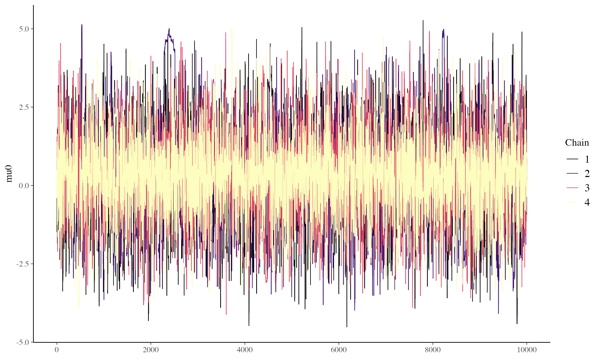
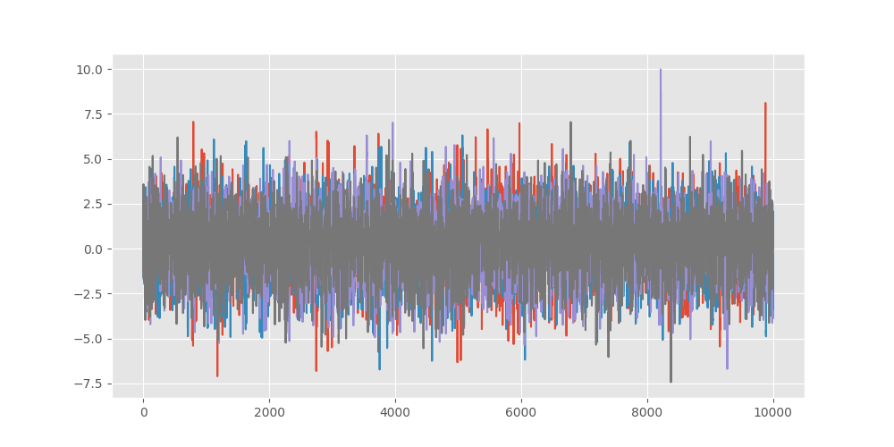
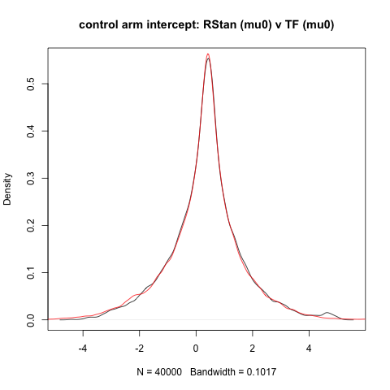

Quick start
This vignette uses the same model as in “Two-arm trial with No U-Turn sampling” but now includes a numerical comparison with the same model implemented in RStan. The code chunks here for the TFP model are more compact and slightly re-ordered and abbreviated. The takeaway is that both libraries give similar results, although some tweaking may be required to TFP, e.g. in the target acceptance probability.
One remark is that RStan readily reports diagnostics such as
divergent transitions. Similar dignostic output can be
captured in TFP via the trace callback (e.g. see the trace fn used below
which also captures divergent transitions). RStan has many other
diagnostic capabilities such as ESS_bulk and ESS_tail sample sizes which
can be readily applied to sampler output from TFP as reticulate makes
the samples available from R.
Click here for the full R Markdown file that generated all the outputs shown here.
Model Formulation
The model implemented here is a non-centered parameterization for a logistic model.
\[ \begin{aligned} \mu_0 &\sim \text{Normal}(0, 2.5)\\ \sigma_0 &\sim \text{Half-Normal}(0, 2.5) \\ \mu_1 &\sim \text{Normal}(0, 2.5) \\ \sigma_1 &\sim \text{Half-Normal}(0, 2.5) \\ \tilde{\theta}_j &\sim \text{Normal}(0, 1)\quad\enspace\text{for}\enspace{j=1,2} \\ \beta_0 &= \mu_0 + \sigma_0 \tilde{\theta}_1 \\ \beta_1 &= \mu_1 + \sigma_1 \tilde{\theta}_2 \\ \text{logit(}{p_i}) &= \beta_0 + \beta_1 z_i\quad\quad\enspace\enspace\text{for}\enspace{i=1,\dots,N} \\ y_i &\sim \text{Bernoulli}(p_i) \end{aligned} \]
Data set
The R chunk below creates a simple dataset of three cols:
- a binary response variable (0/1 = non-responder/responder),
- a binary treatment variable (0/1 = control/test treatment)
- and a basket ID variable. (1)
The basket ID is currently set fixed at 1, denoting there is only one basket in this trial, i.e. a classical two arm randomized trial design. Baskets will be added in other vignettes.
### Prepare model inputs
set.seed(99999)
# Set up data
rr_k_ctrl <- c(0.60) # control response rate for each basket
rr_k_trt <- c(0.58) # treatment response rate for each basket
K<-length(rr_k_ctrl) # number of baskets
N_k_ctrl <- rep(250, K) # number of control participants per basket
N_k_trt <- rep(250, K) # number of treatment participants per basket
N_k <- N_k_ctrl + N_k_trt # number of participants per basket (both arms combined)
N <- sum(N_k) # total sample size
k_vec <- rep(1:K, N_k) # N x 1 vector of basket indicators (1 to K)
z_vec<-NULL;
y<-NULL;
for(i in 1:K){ # for each basket repeat 0-control 1-trt according to the specifc Ns
z_vec<-c(z_vec,rep(0:1,c(N_k_ctrl[i],N_k_trt[i]))) # treatment/control indicator
y<-c(y,
c(rbinom(N_k_ctrl[i],1,rr_k_ctrl[i]), # bernoulli for control
rbinom(N_k_trt[i],1,rr_k_trt[i]))) # for trt
}
thedata<-data.frame(y,basketID=k_vec,Treatment=z_vec)
py$thedata<-r_to_py(thedata) # THE KEY LINE - makes data available to Python
# this is converted into a pandas dataframe object in Python| y | basketID | Treatment |
|---|---|---|
| 1 | 1 | 0 |
| 0 | 1 | 0 |
| 1 | 1 | 0 |
| 0 | 1 | 0 |
| 1 | 1 | 0 |
| 1 | 1 | 0 |
RStan
The RStan workflow is somewhat more compact than the TFP equivalent, where TFP requires more lower level details to be specified whereas these are dealt with behind the scences in RStan. ### Model definition This is somewhat simplified for ease of use, e.g. hard coded hyperparameters.
### Stan model
BHM_stan_1 <- "data {
int<lower = 0> K; // number of baskets (K >= 2)
int<lower = 0> N; // total number of participants
//int<lower = 0, upper = N> N_k[K]; // K x 1 vector of basket sample sizes
int<lower = 0, upper = N> N_k;
int<lower = 1, upper = K> k_vec[N]; // N x 1 vector of basket indicators
int<lower = 0, upper = 1> z_vec[N]; // N x 1 vector of treatment indicators for active treatment arm
int<lower = 0, upper = 1> y[N]; // N x 1 vector of binary responses
}
parameters {
matrix[K,2] beta_tr; // K x 2 matrix of transformed regression coefficients
real mu1; // scalar of hierarchical mean (log odds ratio)
real<lower = 0> sigma1; // scalar of hierarchical SD (log odds ratio)
real mu0; // scalar of hierarchical mean (log odds ratio)
real<lower = 0> sigma0; // scalar of hierarchical SD (log odds ratio)
}
transformed parameters {
matrix[K,2] beta; // K x 2 matrix of regression coefficients (without transformation)
// Calculate beta coefs using transformed betas (leads to better mixing)
for (k in 1:K){
beta[k,1] = mu0 + sigma0 * beta_tr[k,1];
beta[k,2] = mu1 + sigma1 * beta_tr[k,2];
}
}
model {
mu0 ~ normal(0, 2.5); // vectorized normal priors for hierarchical means (specify SD in normal distn)
sigma0 ~ normal(0, 2.5); // vectorized half-normal priors for hierarchical SDs (specify SD in normal distn)
mu1 ~ normal(0, 2.5); // vectorized normal priors for hierarchical means (specify SD in normal distn)
sigma1 ~ normal(0, 2.5); // vectorized half-normal priors for hierarchical SDs (specify SD in normal distn)
beta_tr[,1] ~ normal(0, 1); // vectorized normal prior for the log odds for the control arm
beta_tr[,2] ~ normal(0, 1); // vectorized normal prior for the log odds ratios
for (i in 1:N)
y[i] ~ bernoulli_logit(beta[k_vec[i], 1] + beta[k_vec[i], 2] * z_vec[i]);
}
"Setup and run sampler
# Create list with input values for Stan model
data_input_1 <- list(
K = K, # number of subgroups
N = N, # total sample size
N_k = N_k, # sample size per basket
k_vec = k_vec, # N x 1 vector of subgroup indicators
z_vec = z_vec, # N x 1 vector of active treatment arm indicators
y = y # N x 1 vector of binary responses
)
### Compile and fit model
options(mc.cores = parallel::detectCores())
# Compile model (only run the line below once for a simulation study - compilation not dependent on any
# simulation inputs as defined by scenarios or on simulated data)
stan_mod_1 <- stan_model(model_code = BHM_stan_1)
# Fit model
nsamps <- 10000 # number of posterior samples (after removing burn-in) per chain
nburnin <- 1000 # number of burn-in samples to remove at beginning of each chain
nchains <- 4 # number of chains
BHM_pars_1 <- c("mu0", "sigma0","mu1", "sigma1", "beta","beta_tr") # parameters to sample
start_time <- Sys.time()
stan_fit_2 <- sampling(stan_mod_1, data = data_input_1, pars = BHM_pars_1,
iter = nsamps + nburnin, warmup = nburnin, chains = nchains)
end_time <- Sys.time()
end_time - start_time
post_draws_2 <- as.matrix(stan_fit_2) # posterior samples of each parameterSummarize results
library(bayesplot)
color_scheme_set("viridisA")
p<-mcmc_trace(stan_fit_2,"mu0")
ggsave("precomputed/vg2_traceplot1_stan.png", p)
print(p)
## Now for the TFP Equivalent Model ### Setupimport numpy as np
import pandas as pd
import os
import keras
import tensorflow as tf
import tensorflow_probability as tfp
from tensorflow_probability import distributions as tfd
tfb = tfp.bijectors
import warnings
import time
import sys
## The data.frame passed is now a panda df but for TPF this needs to be further
## converted into tensors here we simply convert each col of the data.frame into
## a Rank 1 tensor (i.e. a vector)
y_data=tf.convert_to_tensor(thedata.iloc[:,0], dtype = tf.float32)
k_vec=tf.convert_to_tensor(thedata.iloc[:,1], dtype = tf.float32)
z_vec=tf.convert_to_tensor(thedata.iloc[:,2], dtype = tf.float32)Model specification
# Define LIKELIHOOD - this is defined first, as functions need defined before used
# The arguments in our function are in the REVERSE ORDER that the parameters
# appear in JointDistrbutionSequential this is essential
def make_observed_dist(log_odd_control_and_ratio,sigma1, mu1,sigma0,mu0):
# beta is a two element tensor, beta[0] parameter for the log odds of the control arm effect
# beta[1] log odds ratio of treatment to control
beta=tf.stack([mu0 + sigma0 * log_odd_control_and_ratio[0],
mu1 + sigma1 * log_odd_control_and_ratio[1]])
#tf.stack is used to stack tensors without creating new tensors
# return a vector of Bernoulli probabilities, one for each patient, and these estimates
# dependent on which arm the patient was randomized to, i.e. two unique values
return(tfd.Independent(
tfd.Bernoulli(logits=beta[0]+beta[1]*z_vec), #define as logits
reinterpreted_batch_ndims = 1 # This tells TFP that log_prob here is a single value
# equal to sum of individual log_probs, a vector
# this is usual when defining a data likelihood
))
# DEFINE FULL MODEL - hyperparams hard coded
# model is y[i] = Bernoulli(p[i]) where logit(p[i]) = intercept + treatment*z[i]
model = tfd.JointDistributionSequentialAutoBatched([
tfd.Normal(loc=0., scale=2.5, name="mu0"), # prior for mean of control arm log odds
tfd.HalfNormal(scale=2.5, name="sigma0"), # prior for sd of control arm log odds
tfd.Normal(loc=0., scale=2.5, name="mu1"), # prior for mean of treatment log odds ratio
tfd.HalfNormal(scale=2.5, name="sigma1"), # prior for sd of treatment log odds ratio
# now come to the standard normals resulting from non-centred parameterization
# define these as vector MVN with identity scale matrix
tfd.Normal(loc=tf.zeros(2), scale=tf.ones(2), name="log_odd_control_and_ratio"),
# now finally define the likelihood as we have already defined parameters in this
make_observed_dist # the data likelihood defined as a function above
])
# the ordering of the arguments in this must match exactly the ordering used in
# JointDistributionSequentialAutoBatched
def log_prob_fn(mu0, sigma0, mu1,sigma1, log_odd_control_and_ratio):
return model.log_prob((
mu0, sigma0, mu1,sigma1, log_odd_control_and_ratio,y_data))
## last argument is the DATA (y)
Setup the MCMC sampling
First the initial step sizes and initial conditions
## Adaptive step size.
## Do in two parts, first a structure to allow step size to adapt separately for
## each parameter
steps=[tf.constant([0.5]), # mu0
tf.constant([0.05]), # sigma0
tf.constant([0.5]), # mu1
tf.constant([0.05]), # sigma1
tf.constant([[0.5,0.5]]) # log_odd_control_and_ratio
# NOTE - vector and must have correct shape
]
## now we replicate the above "steps" array into a structure where this is
## repeated inside each chain
n_chains=4 ## THIS SETS NUMBER OF CHAINS
steps_chains = [tf.expand_dims(tf.repeat(steps[0],repeats=n_chains,axis=-1),axis=-1), # starts with shape (1,)
tf.expand_dims(tf.repeat(steps[1],repeats=n_chains,axis=-1),axis=-1), # starts with shape (1,)
tf.expand_dims(tf.repeat(steps[2],repeats=n_chains,axis=-1),axis=-1), # starts with shape (1,)
tf.expand_dims(tf.repeat(steps[3],repeats=n_chains,axis=-1),axis=-1), # starts with shape (1,)
tf.expand_dims(tf.tile(steps[4],[n_chains,1]),axis=1) # starts with shape (1,2) i.e. [[a, b]]
]
# initial conditions
istate=[tf.constant([0.0]),
tf.constant([0.5]),
tf.constant([0.0]),
tf.constant([0.5]),
tf.constant([[1.,-1.]])]
current_state = [tf.expand_dims(tf.repeat(istate[0],repeats=n_chains,axis=-1),axis=-1), # starts with shape (1,)
tf.expand_dims(tf.repeat(istate[1],repeats=n_chains,axis=-1),axis=-1), # starts with shape (1,)
tf.expand_dims(tf.repeat(istate[2],repeats=n_chains,axis=-1),axis=-1), # starts with shape (1,)
tf.expand_dims(tf.repeat(istate[3],repeats=n_chains,axis=-1),axis=-1), # starts with shape (1,)
tf.expand_dims(tf.tile(istate[4],[n_chains,1]),axis=1) # starts with shape (1,2) i.e. [[a, b]]
]
Now the sampler structure, bijectors, step size adaptation and the technical parameters for No U-Turn.
# bijectors which define the mapping from **unconstrained space to target space**
# i.e. Exp() is used for scale as this maps R -> R+
unconstraining_bijectors = [
tfb.Identity(), # mu0
tfb.Exp(), # sigma0
tfb.Identity(), # mu1
tfb.Exp(), # sigma0
tfb.Identity() # log_odd_control_and_ratio - this is a vector parameter
]
num_results=10000 # number of steps to run each chain for AFTER burn-in
num_burnin_steps=1000 # this is discarded (currently not other option in TPF)
mysampler=tfp.mcmc.NoUTurnSampler(
target_log_prob_fn=log_prob_fn,
max_tree_depth=15, # default is 10
max_energy_diff=1000.0, # default do not change
step_size=steps_chains
)
sampler = tfp.mcmc.TransformedTransitionKernel( # inside this the starting conditions must be on
# original scale i.e. precisions must be >0
mysampler,
bijector=unconstraining_bijectors
)
## define final sampler - NUTS, bijectors and adaptation
adaptive_sampler = tfp.mcmc.DualAveragingStepSizeAdaptation(
inner_kernel=sampler,
num_adaptation_steps=int(0.8 * num_burnin_steps),
reduce_fn=tfp.math.reduce_logmeanexp, # default - this determines how to change the step
# adaptation across chains
#reduce_fn=tfp.math.reduce_log_harmonic_mean_exp, # might be better if difficult chains
target_accept_prob=tf.cast(0.95, tf.float32)) # this is a key parameter to get good mixingNow define the trace/monitoring function.
def trace_fn(state, pkr):
return {
'sample': state, # this is also pkr['all'][0].transformed_state[0]
'step_size': pkr.new_step_size, # <--- THIS extracts the adapted step size
'all': pkr, #state is also pkr['all'][0].transformed_state[0]
#pkr is a named tuple with ._fields = ('transformed_state', 'inner_results')
# 'transformed_state is the state
# 'inner_results' is diagnostics
# ('target_log_prob', 'grads_target_log_prob', 'step_size', 'log_accept_ratio', 'leapfrogs_taken', 'is_accepted', 'reach_max_depth', 'has_divergence', 'energy', 'seed')
'has_divergence':pkr[0].inner_results.has_divergence,
'logL': log_prob_fn(state[0], state[1],state[2],state[3],state[4])
}Run the actual sampler
The number of steps and burn-in were defined above when we setup the No U-Turn sampler.
# Speed up sampling by tracing with `tf.function`.
@tf.function(autograph=False, jit_compile=True,reduce_retracing=True)
def do_sampling():
return tfp.mcmc.sample_chain(
kernel=adaptive_sampler,
current_state=current_state,
num_results=num_results,
num_burnin_steps=num_burnin_steps,
seed= tf.constant([9999, 9999], dtype=tf.int32), # this is random seed
trace_fn=trace_fn)
t0 = time.time()
#samples, kernel_results = do_sampling()
samples, traceout = do_sampling()
#res = do_sampling()
#[mu0, sigma0, mu1, sigma1,log_odds_control_and_ratio], results = do_sampling()
t1 = time.time()
print("Inference ran in {:.2f}s.".format(t1-t0))
## there is a trailing dimension of 1 so need to squeeze to get each col is chain, and each row is parameter sample
samplesflat = list(map(lambda x: tf.squeeze(x).numpy(), samples))Some Output plots
We plot the log-likelihood over the MCMC steps (post-burn-in) using two chains, a different colour for each chain. Similarly for trace plots. These are just illustrative output examples, the number of burn-in and total chain steps here are too low for reliable estimation.
import matplotlib.pyplot as plt
plt.style.use('ggplot')
plt.figure(figsize=(10, 5))
plt.plot(samplesflat[0]) # mu_b
plt.savefig(f"precomputed/vg2_traces.png")
plt.show()
